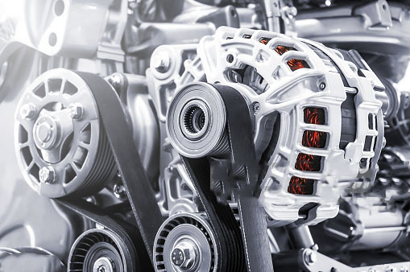

An electric motor is an electrical machine that converts electrical energy into mechanical energy.Electric motors operate through the interaction between the motor's magnetic field and the electric current in a wire winding to generate force in the form of torque applied on the motor's shaft.Electric motors can be powered bt direct currrent(DC) sources, such as from batteries, motor vehicles or rectifiers or by alternating current(AC) sources, such as a power grid, inverters or electric generators.
Electric motors are used in ship propulsion, pipeline compression and pumped-storage applications in the industrial setting. They are also found in industrial fans, blowers and pumps, machine tools, household appliances, power tools and disk drives.In certain applications, such as in regenerative braking with traction motors, electric motors can be used in reverse as generators to recover energy that might otherwise be lost as heat and friction.
Electric motors produce linear or rotary force (torque) intended to propel some external mechanism, such as a fan or an elevator. An electric motor is generally designed for continuous rotation, or for linear movement over a significant distance compared to its size. Magnetic solenoids produce significant mechanical force, but over an operating distance comparable to their size. Transducers such as loudspeakers and microphones convert between electrical current and mechanical force to reproduce signals such as speech. When compared with common internal combustion engines (ICEs), electric motors are lightweight, physically smaller, provide more power output, are mechanically simpler and cheaper to build, while providing instant and consistent torque at any speed, with more responsiveness, higher overall efficiency and lower heat generation. However, electric motors are not as convenient or common as ICEs in mobile applications (i.e. cars and buses) as they require a large and expensive battery, while ICEs require a relatively small fuel tank.